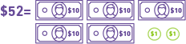
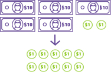
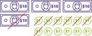
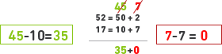

PRÁCTICAS DEL LENGUAJE
PRÁCTICAS DEL LENGUAJE
 SUMA Y RESTA
TUTORIAL 1
TUTORIAL 2
SUMA Y RESTA
TUTORIAL 1
TUTORIAL 2
Carla tiene $52 y compra una gaseosa de $17.
¿Cuánto dinero le queda?
• Primera resolución posible
Es posible que lo resuelvan con el método que les da más seguridad, como apoyarse en los billetes de $10 y monedas de $1 que es como lo venían trabajando en 1 año.
Los $52 los representan con cinco billetes de $10 y dos monedas de $1
Como un billete de $10 es equivalente a diez monedas de $1 reemplazan un billete por las monedas:
Luego, le sacan los $17: un billete de $10 y siete monedas de $1
De esta manera, ven que les quedan tres billetes de $10 y 5 monedas de $1. Por lo tanto el resultado, el dinero que le queda a Carla es
• Segunda resolución posible
Descomponer a los números 52 y 17 de manera conveniente. Al hacerlo, quedan dos igualdades
Al tener que calcular 52 - 17, significa pensar en la resta en ambos lados de las igualdades anteriores. Noten que sólo se resta la igualdad de abajo y presten atención a los colores:
Los chicos ,con la guía del docente, lo piensan de la siguiente manera:
Descomponer al 52 y al 17 de manera conveniente para restar primero 10 al 50 (que les da 40)
y luego a esos 40 sacarle los 7 que le faltaban restar. Eso les da como resultado 33.
A estos 33 luego le tienen que sumar los 2 del 52 y llegan así al resultado final que es 35.
y lo pueden escribir así:
Para tener en cuenta
Un error común en el que los chicos suelen caer es en hacer:
El error que cometen es cambiar el orden de las unidades en la resta, pues el 7 le pertenece al número que se debe restar: al 17. Y en este caso el que están restando es el 2.
Esto se puede ver cuando pensamos en la resta de ambas igualdades: sólo la igualdad de abajo RESTA (en rojo).La igualdad de arriba, SUMA.
¿Por qué utilizamos diferentes colores en los cálculos?
Para un mejor seguimiento de las operaciones numéricas. En este caso, para no mezclar términos de las igualdades (respetamos las columnas de las decenas y de las unidades) y poder seguir el desarrollo de la estrategia de cálculo.
•Tercera resolución posible
Una última de resolución es descomponer los números 52 y 17
Las posibilidades de pensar la resta son varias. Una podría ser restar 50-10=40
y de este 40 sacamos lo necesario para igualar las unidades de ambos números
deben ser = por lo tanto, al 40 le sacamos 5

Sólo queda hacer la resta de las unidades: 7 - 7=0
También podrían pensar en sacarle al 50 (lo que llamamos pedirle prestado) los 5 que necesita el 2:
Comprender que un número puede componerse y descomponerse en distintas partes, y que esto puede hacerse de formas muy diversas, ayuda a los niños a desarrollar diferentes estrategias de cálculo
Carla tiene $52 y compra una gaseosa de $17.
¿Cuánto dinero le queda?
• Primera resolución posible
Pueden utilizar cualquiera de los procedimientos del tutorial 1. Por ejemplo:
descomponer los números 83 y 47 en
Entonces le restan primero 40 al 80, lo que les da como resultado 40. A este 40 le restan los 7 que faltan (40 - 7 = 33). Y a estos 33, le suman los 3 del 83 -> 33 + 3 = 36